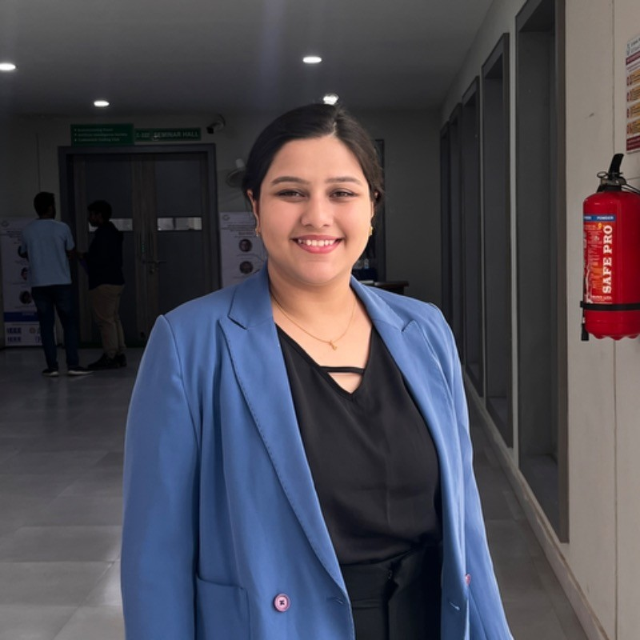

SUDESHNA RATH

Objective
A motivated and dedicated Computer Engineering student with over two years of in-depth experience designing and
implementing Data Analysis and Machine Learning solutions. Skilled in Python, TensorFlow, and sci-kit-learn, focusing on
computer vision and deep learning methodologies. Known for a track record of successfully applying innovative
AI technologies to address real-world challenges. Committed to leveraging a strong technical foundation, critical thinking, and creative problem-solving abilities to contribute to advancements in AI.
Education
Bachelor of Computer Engineering- 8.20
XII-AISSCE - 90%
X-AISCE- 90%
Work Experience
- AI Intern, Reliance Jio, Bangalore, Karnataka | [June 2024 – December 2024]
- Conducted an in-depth data analysis to extract meaningful insights from vast customer datasets.
- Leveraged advanced statistical techniques and machine learning-based analytics to identify patterns in purchasing behavior, segment customers, and optimize
recommendation strategies by implementing NetworkX.
- Additionally, worked with data visualization tools to present findings effectively, aiding in data-driven decision-making for enhanced
personalization and business efficiency.
- Contributed to an AI-powered personalization project, optimizing customer experiences based on buying behavior.
Certified Internship in Applications of AI in Healthcare | [January 2024 – April 2024]
Designed and deployed ML models for medical diagnostics, focusing on anomaly detection and classification.
Optimized deep learning techniques for advanced image processing in biomedical research under Ph.D. researchers at National Yang-Ming Chiao Tung University, Taiwan.
Machine Learning Intern, Croatia Technologies | [October 2023 - November 2023]
Developed and deployed classification and regression models for AI-driven solutions.
Worked on feature engineering and model optimization for improved accuracy.
Published Works
- Application of Artificial Intelligence using Mammograms to Identify Breast Cancer - 2025
[IEEE] Paper | Github Link
Authored and published a research paper on breast cancer detection using CNN-based deep learning models, achieving high classification accuracy in distinguishing benign and malignant cases.
Led image pre-processing techniques, including thresholding, contouring, and ROI detection, to enhance diagnostic precision. Implemented and compared multiple classification models, addressing challenges related to false positives and negatives.
Published by IEEE, this research contributes to advancing AI-driven medical diagnostics.
Projects
- Movie Review Click here
Developed a static web page using HTML to showcase curated movie reviews. The page features a clean layout with sections for movie posters, synopses, ratings, and personal critiques. Focused on semantic HTML structure and user-friendly design to enhance readability and engagement.
- Recipe Page using HTML Click here
Created a fully functional and responsive HTML-based recipe page showcasing a classic Dahi Chicken. Structured the layout using semantic HTML elements and inline CSS, demonstrating web development basics.
- Hyperparameter tuning methods on AI- Music Recommendation system Github Link
Developed an AI-powered Music Recommendation System, optimizing performance through advanced hyperparameter tuning methods. Experimented with techniques such as grid search, random search, and Bayesian optimization to enhance model accuracy and personalization. Improved recommendation quality by fine-tuning parameters for deep learning models, ensuring better user experience and engagement.
- Diabetes Prediction System Github Link
Developed a user-friendly web application using Streamlit to predict diabetes risk, leveraging multiple classification machine learning algorithms and real-time input analysis for accurate health predictions.
- Crop Yield Prediction Github Link
Designed and implemented a user-friendly machine learning tool for optimal crop selection using regression models to forecast suitability based on regional and environmental factors. Data analysis was performed with Seaborn to visualize correlations and uncover crop yield determinants, using Scikit-learn, XGBoost, and advanced Python libraries for accurate forecasting.
Certificates
- Meta Data Analyst Specialization [November 2024]
Completed comprehensive training in data analysis, focusing on other foundational skills of managing, analyzing, and visualizing data using industry-standard tools.
- Introduction to Image Processing- MathWorks [November 2024]
Gained practical knowledge in image manipulation, filtering, and enhancement techniques.
- Automating Image Processing- MathWorks [November 2024]
Explored advanced methods to automate repetitive image processing tasks for enhanced efficiency.
- Image Segmentation, Filtering, and Region Analysis- MathWorks [November 2024]
Specialized in image segmentation techniques, including region-based analysis for advanced image understanding.
- Linear Regression with NumPy and Python [October 2024]
Developed proficiency in implementing linear regression models using NumPy for predictive analysis and data-driven insights.
- Certified Course in Recent Trends in Speech Processing and Its Application [June 2024]
Completed an advanced certification in speech processing, mastering NLP, PyDub, WaveGAN, and GAN models to implement cutting-edge AI solutions for speech and audio processing in music.
Skills
- Technical Skills:
- Python
- HTML
- CSS
- ML/DL Frameworks:
- TensorFlow
- scikit-learn
- Pandas
- NetworkX
- Keras
- Data Management:
- MySQL
- Data Warehousing
- Soft Skills:
- Teamwork
- Critical Thinking
- Creativity
- Collaboration
- Communication
- Adaptability